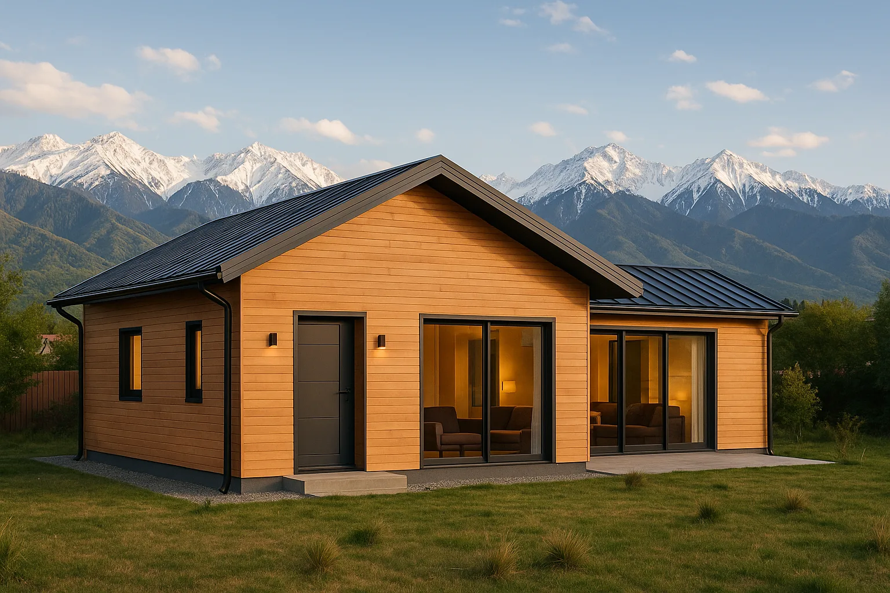
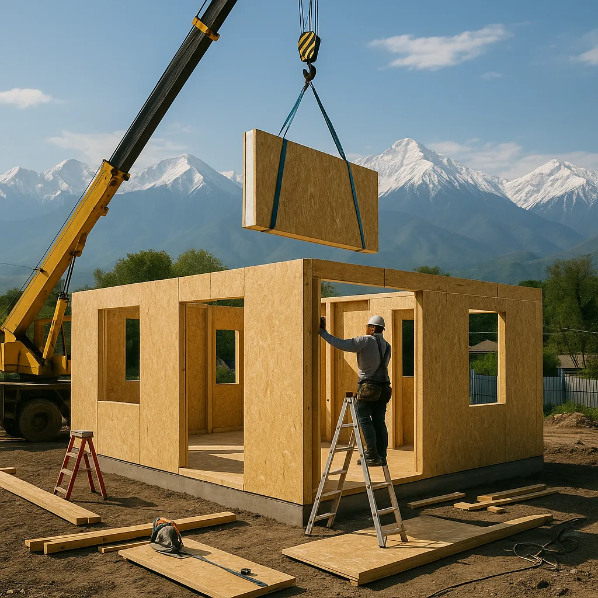
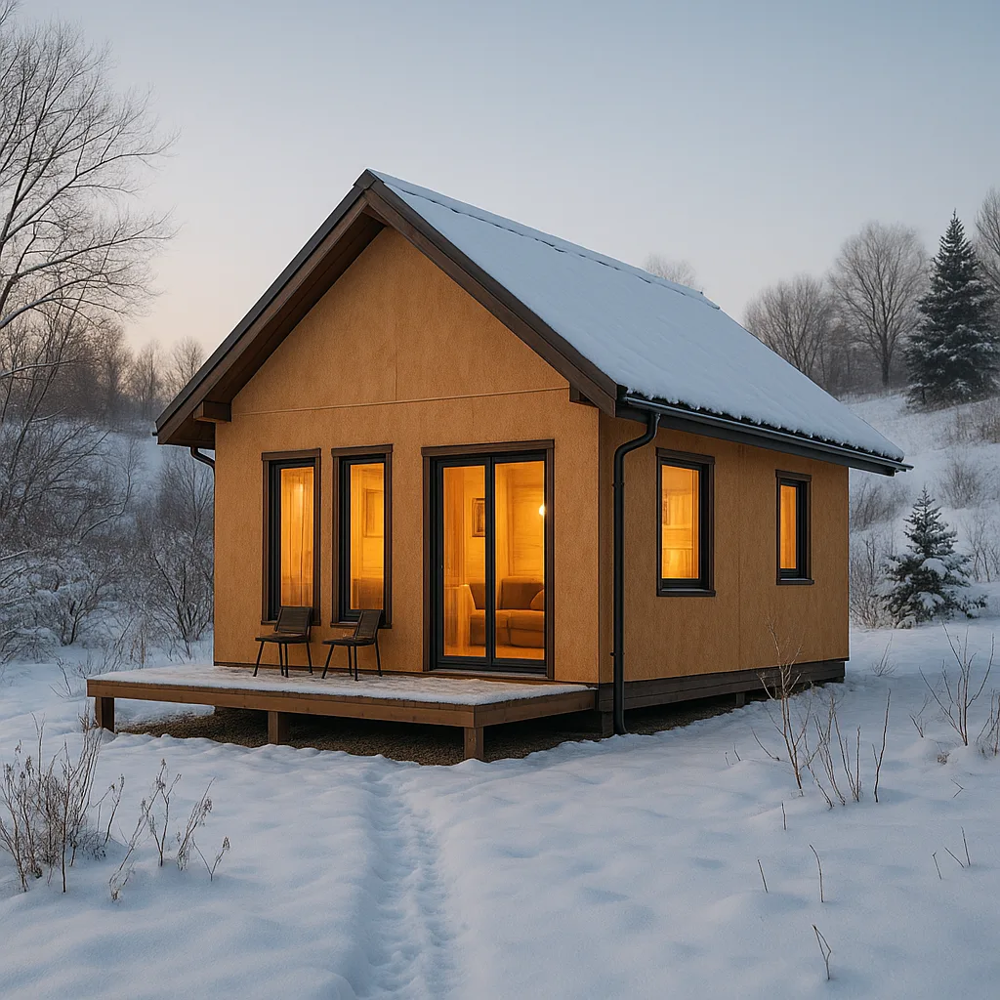

Энергоэффективность домов из СИП-панелей в Казахстане

В современном мире, где энергоэффективность становится одним из главных критериев выбора жилья, дома из СИП-панелей занимают лидирующие позиции. В Казахстане, где климатические условия варьируются от суровой зимы до жаркого лета, вопрос энергосбережения стоит особенно остро. В этой статье мы разберем, почему дома из СИП-панелей становятся все более популярными в нашей стране и как они помогают сэкономить на отоплении и кондиционировании.
Что такое СИП-панели?
СИП-панели представляют собой строительный материал, состоящий из двух ориентировано-стружечных плит (OSB), между которыми расположен слой жесткого пенополистирола. Такая конструкция обеспечивает высокий уровень теплоизоляции и прочности, что делает ее идеальной для использования в строительстве домов в Казахстане. СИП-панели были изобретены в середине XX века в США и с тех пор завоевали популярность по всему миру благодаря своим уникальным свойствам и долговечности. В Казахстане их использование только набирает обороты, но уже сейчас можно наблюдать огромный интерес со стороны застройщиков и частных лиц.
Преимущества энергоэффективности СИП-домов
- Экономия на отоплении и кондиционировании: Благодаря высокому уровню теплоизоляции, дома из СИП-панелей значительно уменьшают расходы на отопление зимой и охлаждение летом. Например, стандартный дом из СИП-панелей может сократить затраты на отопление до 50% по сравнению с кирпичным домом аналогичного размера.
- Быстрота строительства: СИП-панели позволяют быстро возводить стены и крыши, что снижает затраты на строительные работы и временные издержки. В среднем, дом площадью 150 квадратных метров может быть построен всего за 2-3 месяца.
- Экологичность: Панели изготавливаются из экологически чистых материалов, что позволяет сохранить здоровье жильцов и окружающую среду. OSB-плиты имеют низкое содержание формальдегида, а пенополистирол является безопасным для человека и не выделяет вредных веществ при эксплуатации.
Сравнение СИП-панелей с традиционными материалами
При сравнении СИП-панелей с традиционными кирпичными и деревянными конструкциями, можно выделить несколько ключевых различий:
- Теплоизоляция: СИП-панели обеспечивают более высокую теплоизоляцию, что особенно важно в условиях казахстанского климата. Коэффициент теплопроводности пенополистирола составляет 0,038 Вт/(м·K), что значительно ниже, чем у кирпича (0,7 Вт/(м·K)).
- Устойчивость к погодным условиям: В отличие от дерева, СИП-панели не подвержены гниению и деформации при изменении влажности. Это особенно важно в условиях резких перепадов температуры и влажности в Казахстане.
- Скорость строительства: Построить дом из СИП-панелей можно в 2-3 раза быстрее, чем из кирпича или дерева. Это позволяет значительно сэкономить на оплате труда рабочих и аренде техники.

Технология строительства СИП-домов
Технология строительства домов из СИП-панелей включает несколько основных этапов:
- Проектирование и подготовка участка. На этом этапе учитываются все особенности местности, включая геологические и климатические условия.
- Изготовление панелей на заводе и доставка на строительную площадку. На заводе HotWell.kz в Алматы панели изготавливаются с точностью до миллиметра, что ускоряет процесс монтажа.
- Монтаж фундамента и установка панелей. Обычно используется свайный или ленточный фундамент, в зависимости от характеристик грунта.
- Установка кровельных систем и инженерных коммуникаций. Особое внимание уделяется герметичности стыков, чтобы обеспечить максимальную энергоэффективность.
Благодаря этим этапам, строительство дома может занять всего несколько месяцев, что делает эту технологию одной из самых быстрых на рынке. Важно также отметить, что монтаж можно проводить практически в любое время года, что особенно актуально для регионов с непродолжительным строительным сезоном.
Энергоэффективность в зимнем строительстве
Особенно важно отметить преимущества домов из СИП-панелей в зимнее время. Благодаря своей конструкции, такие дома сохраняют тепло даже в самые суровые морозы, что делает их идеальными для северных регионов Казахстана. Например, в условиях температуры -30°C, потери тепла через стены из СИП-панелей будут минимальны, что существенно уменьшает затраты на отопление. Кроме того, благодаря низкой теплопроводности материалов, внутри дома поддерживается комфортная температура даже при минимальных затратах энергии.

Часто задаваемые вопросы
Какой срок службы у дома из СИП-панелей?
Срок службы дома из СИП-панелей может достигать 50 лет и более, при условии правильной эксплуатации и своевременного технического обслуживания. Важно следить за состоянием кровли и фасада, чтобы избежать проникновения влаги, которое может повлиять на долговечность конструкции.
Можно ли строить из СИП-панелей в условиях сурового климата Казахстана?
Да, СИП-панели отлично подходят для использования в различных климатических условиях, включая суровые зимы и жаркое лето Казахстана. Их способность сохранять тепло зимой и прохладу летом делает их универсальным решением для любого региона страны.
Какой фундамент лучше использовать для СИП-дома?
Фундамент для дома из СИП-панелей может быть разным, но наиболее часто используются свайный или ленточный фундаменты, в зависимости от типа почвы и геологических условий. Свайный фундамент подходит для участков с неравномерным грунтом, тогда как ленточный фундамент рекомендуется для более стабильных почв.
Насколько сложно провести инженерные коммуникации в доме из СИП-панелей?
Проведение инженерных коммуникаций в доме из СИП-панелей не представляет особой сложности. Благодаря гибкости и легкости панелей, прокладка электрических, водопроводных и вентиляционных систем осуществляется быстро и эффективно. Специалисты компании HotWell.kz всегда готовы помочь в проектировании и установке всех необходимых систем.
Заключение
Дома из СИП-панелей становятся все более популярными в Казахстане благодаря своей энергоэффективности, скорости строительства и экономичности. Если вы планируете построить дом, который будет теплым зимой и прохладным летом, обратитесь в компанию HotWell.kz. Наши специалисты помогут вам выбрать проект, который соответствует вашим требованиям и бюджету. Посетите наш каталог проектов, чтобы найти идеальный дом для вашей семьи. Мы гарантируем качество строительства и предлагаем полный спектр услуг — от проектирования до сдачи дома "под ключ".
Хотите такой же дом из СИП-панелей?
Бесплатно рассчитаем смету и подберём проект под ваш участок и бюджет.